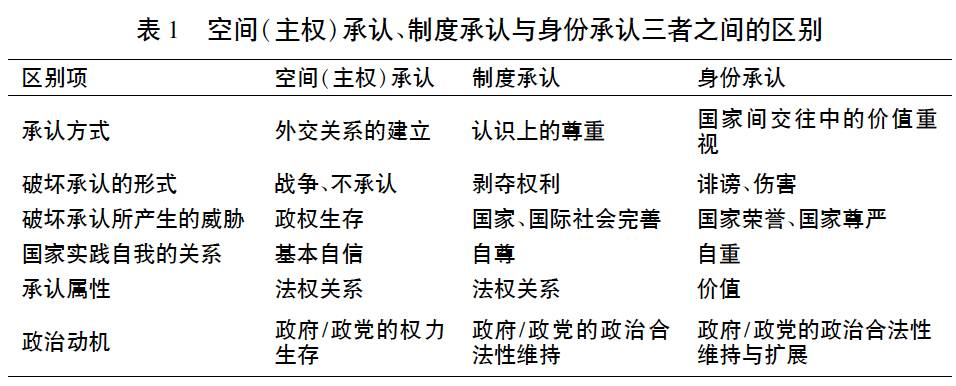

收录于合集
简
赵俊
浙江师范大学非洲研究院助理研究员，法学博士
内容提要
虽然国际关系中存在大量的承认经验，但是国际关系研究中却没有相关的研究。国际关系中的承认主要在空间( 主权) 、制度与身份三个维度上展开。国际关系中的承认研究其实暗含着这样一个假定，即国家不仅仅是个在国际社会中争夺权力与财富的物质性实体，也是一种具有自身特性的文化体。承认追求与地位追求及荣誉追求是有区别的。地位与荣誉是具有等级特征的，而承认则是基于文化多元主义。对外政策中的承认利益追求本身涉及两个方面: 一个方面是国内的政治合法性承认; 另一个方面个则是国际社会对某项外交政策及其行为的认可。在国际关系中，承认既是行为体追求的目标又是其行为的手段。国家追求承认的核心政治动机为维护与扩展政治合法性，观众成本理论可以对国际关系中的承认进行微观机理的分析，同时观众成本理论所使用的方法又是分析国际关系中承认的衡量工具。
关键词
承认 观众成本 政治合法性 对外政策
国际关系中存在普遍的承认需求，国家的承认追求主要表现在三个承认领域: 国家承认、国际组织中的代表权 /资格的承认和国家发展道路的承认。而要从更为抽象的意义上说，国际关系中的承认主要是在空间( 主权) 、制度和身份三个维度上展开 。当然，承认的斗争领域并不仅仅局限于此，国家形象、历史问题、具体的国家对外政策及其行为等都存在大量的承认经验。可是，与这些广泛存在的经验事实不协调的是，国际关系研究中没有相关的承认研究，承认研究在主流的国际关系研究中一直备受冷落。在与国际关系研究密切相关的国际法领域中，承认主要集中于国家承认、国际组织中的代表权 /资格的承认。国际法认为承认不仅仅是一个法律行为，更是一个国际法行为主体间的政治行为，政治考虑在决定承认与否过程中起着重要作用，但在很大程度上，国际法主要关注的是相关承认问题的法律程序的设计与阐明，政治考虑并非是国际法的研究目标。
本文将分析国际关系中的承认需求产生的原因、承认核心政治动机以及承认的微观机理。承认需求产生的原因可以概括成这样一个问题: 在完全/部分异质认同的国家间如何实现和平共存? 在对外政策的多元启发理论( poliheuristic theory，PH) 中，政治非补偿性原则( noncompensatory) 在对外政策的决策中起到关键性的作用，本文将部分修正这种非补偿性原则，并认为政治合法性是对外政策，进而也是承认的核心政治动机。观众成本理论作为一个具体的分析工具可以展现承认的微观机理。在现有的研究中，观众成本理论的应用范围主要是限制在国内社会，但观众成本更是一个综合性的概念，既包含国内观众成本，也包括国际观众成本，这不仅仅是理论分析的便宜，也是符合国际关系事实的。
国际关系研究中的承认观念
虽然国际关系中存在大量的承认现象，但是承认在国际关系研究中并非是个关键词。与国际关系研究中的承认研究状况相反，承认研究在政治哲学中相对成熟。政治哲学中的承认研究主要集中于对乔治·威廉·弗里德里希·黑格尔( Georg Wilheim Friedrich Hegel) 的主奴辩证法、亚历山大·科耶夫( Alexandre Kojeve) 对黑格尔承认观念的解读以及阿克塞尔·霍耐特( Axel Honneth) 的承认理论的研究。政治哲学中的承认研究对于国际关系领域的承认研究自然有着重要的参照意义，将政治哲学中的承认观念引渡到国际关系研究中，当然需要进行可行性的分析和对承认概念的应用范围与主体、对象进行适度的调整。
就宽泛的国际关系领域来说，涉及承认主题( 而非单纯的承认外交) 的主要代表人物有弗朗西斯·福山( Francis Fukuyama) 和邓勇( Young Deng) 。福山是国际关系领域内较早以“承认斗争”来理解历史的学者之一。福山的《历史的终结》所论述的观点与结论遭到很大的质疑。在这里，我们不讨论其观点与结论的正确与否，我们所关注的是他对国际关系、历史理解中所持有的承认观念。在《历史的终结》中，我们可以清晰地看到黑格尔的主奴辩证法对福山的影响。在该著的第三部分，福山以“要求承认的斗争过程”为鲜明的标题，沿着科耶夫 － 黑格尔式的历史机制———为承认而斗争 ( struggle for recognition) 来理解历史。 在福山看来，将历史当做“承认斗争”去了解不仅仅是了解现代世界的一种易懂而又有益的方法，而且在现实中承认斗争在我们的四周处处可见。在所谓承认的欲望中，有两种欲望: “优越欲望”与“对等欲望”。要求承认的欲望煽起原初的战争，带来主人对奴隶的支配，要求承认的逻辑最后导致普遍承认的欲望———帝国主义模式 。虽然福山对承认的理解是为了佐证自由民主制度建立在普遍承认形态基础上，进而得出历史已经终结的结论，但是承认作为理解历史的方法以及历史中所存在承认动力及其在现代世界中的作用模式，对于我们反思国际关系的主流理论及外交政策中的道德动机都有着积极的效应。承认欲望中的“优越欲望”相对于现实主义的“相对权益”。结构现实主义对“相对权益”的解释基于“安全困境”的逻辑，“优越欲望”并不是基于国家绝对权益的追求，而是基于人本性中的道德欲望。“优越欲望”对现实主义安全观提出了挑战，并将分析的对象转向国家内部，但国家内部中影响因素或分析变量是如此之多，对于追求精确性的科学研究来说，似乎变得不可能完成，但更符合国际关系的现实。
邓勇的研究侧重于中国对“地位( status) ”的追求，并把这一动机作为理解中国对外政策的关键，并认为在中国对外政策中“地位”比权力更为重要，在关于中国对外政策的讨论中，“国际地位”是一个更为重要的、值得期许的价值追求 。自 20 世纪 90 年代中期以来，从“国际地位”这个术语所使用的频率上来看，中国可能是世界上最为关切自身地位的国家。从历史的角度来看，后冷战时代的中国对外政策的变化非常显著，其中最令人注目的是古代的“世界中心”意识让渡为从国际社会发展出合法性的承认。虽然邓勇对中国对外政策分析的目标不是建立一种新的国际关系理论，而是对中国对外政策的难题( the puzzle of Chinese foreign policy) 进行解惑，但从他对现实主义的批判性立场和著作副标题及前言的论述中，可以看出其抱有的重组国际关系( 理论) ( the realignment of international relations) 的期待。邓勇发现中国对外政策的动力与模式并未遵循现实主义的理论，尤其是后冷战时代的中国面临两个问题: 一个是中国如何创造出一个有利于其国家主导的增长和渐进式改革的国际环境? 另一个是中国如何为自己在西方主导下的国际等级秩序中的大国地位铺路? 而邓勇的结论是，中国应在平衡接受与自主、适应与修正、权力与合法性、全球化与民族主义关系中为自己的大国地位赢取承认。邓勇的主题虽然是“地位动力( status drive) ”，并非直接使用承认的概念，但在“地位”概念的阐释中，赋予了承认的价值。就“地位”研究与“承认”研究来说，二者的区别在于: 第一，“承认”研究较“地位”研究更具有学术基础，这个基础扎根在哲学特别是政治哲学的承认理论上，为国际关系领域的承认研究做出了理论铺垫，从社会性的互动背景和对合法性的获得中找到了争取承认的动机来源。第二，“承认”研究较“地位”研究更具有连续性，并非是解释一段时间，而是在文化的维度上为理解对外政策提供一种整体性的线索。
综合起来，福山的研究较为宽泛，借助于黑格尔的主奴辩证法及科耶夫关于承认的解释，提出从承认的角度来理解整个历史; 邓勇的研究只是以一种迂回的方式触及承认的主题，且是以中国对外政策为研究对象 。中国国际关系学界对承认观念的研究比较薄弱，即使是从宽泛的角度上来说，涉及承认研究的也不多。王逸舟在论述美国霸权及中国外交中所持有的观点时认为，美国的成功及巨大影响力不只是通过强制和实力实现的，它还提供思想观念，领导权是通过示范获得的。美国在二战后国内经济和消费社会的繁荣是史无前例的，给世界带来巨大的影响和吸引力，在两次世界大战中美国扮演的角色、冷战时期与苏联的争斗及其争斗的结果，给世界平添了一个信息:美国是其他地区的模式。同时，在新时期的中国外交中，强调责任需求，为世界贡献更多的国际公共产品应是中国未来对外政策中展现大国风范的应有之义。
承认需求的产生: 合法性
无论承认研究在国际关系研究中的地位如何，承认毕竟是国际关系中的一种事实。在国际关系中，承认既是一种战略姿态，也是一种战略目标。国际关系中的承认研究其实暗含着一个假定，即国家不仅仅是一个在国际社会中争夺权力与财富的物质性实体，也是一种具有自身特性的文化体。如果考虑到国家的文化体身份，就会涉及认同、荣誉、政治制度所体现的核心价值体系等不同于纯粹的经济利益等要素。认同部分地是由他人的承认构成的; 如果得不到他人的承认，或者只是得到他人扭曲的承认，也会对我们的认同构成显著的影响。
在国际关系中，承认的根基为文化多元主义。如果自我—他者的界限得以消解或者是部分消解，那就意味着新认同的出现，承认的紧张关系就会消失或淡化，承认斗争就会低烈得多。在国际关系中，作为战略目标的承认与荣誉是不同的，在国家对外政策目标中，承认是比荣誉要低得多的一阶目标，荣誉在国际社会中属于稀有资源，一旦荣誉本身被普遍化了，那荣誉就没有任何价值可言了。国家的自我保护和荣誉追求对国际关系造成的影响是不一样的。追求自我保护并不必然带来冲突或战争，因为对方也具有自我保护的意识，最后的结果如果是冲突双方的灭亡，那么冲突本身就丧失了价值。但是，过度追求荣誉必然会导致冲突或战争，为了引导人类放弃战争状态，自我保存的意愿要强化，而对荣誉的追求则要淡化。当代国际社会的国家间关系中民主化的提倡，其初衷是发展中国家对国际事务的平等参与，但在某种意义上也是淡化荣誉的一种手段，客观上部分消解了国家追求荣誉而造成的紧张关系。淡化基于等级制的荣誉使得基于差异政治的承认在当代成为国家间所要坚守的一项基本要求，忽视承认或者是对这种承认关系的破坏都可能会造成对国家间关系的伤害。互相间的承认是国际关系中的国家淡化荣誉追求的一种重要方案。
在国际关系中，承认的需求可以在以下三个方面得到展示:
第一是空间( 主权) 承认，尤其表现在国家间的外交承认 。外交承认是国家进入国际社会的入门劵、基本条件。国家在历史上消亡几率相对其他行为体而言要小得多，本无须承认与否。但新国家的出现在近现代以及当代的历史中并非是少见多怪的事实，特别是在国家分裂、合并后新成立的国家、历史遗留问题带来的承认问题、代表国家的王室朝代、政府更迭上，承认本身就是一个国家的客观需求与斗争对象。一个国家的对外政策及其行为的基础是来自于该国核心价值体系所限定的国家利益，在某种程度上表现为意识形态与客观的财富、权力意义上的国家利益之间的张力。我们把外交承认作为一个独立斗争场合，可能容易遭到这样的观点的质疑: 外交承认只是国家对外政策的一种表现形式，它是由该国核心价值体系所限定的国家利益所决定的，也就是说，外交承认实质只是利益斗争而已，不必将外交承认作为一个独立研究主题。这个质疑有着很强的现实根基，外交承认斗争确实有着坚实的利益盘算，但这种利益在新情势下进行盘算的困难与模糊性也是存在的，而且国家的核心价值体系( 意识形态) 、国际行为准则、客观的国家利益都掺杂在一起，令外交承认成为一个包含着诸多要素在内的、重要的国家间斗争的领域。
第二是制度承认。制度承认主要体现为国家对国际制度的态度，涉及国家对国际制度公正性的认知，如国家对联合国安理会常任理事国、国际货币基金组织中决策权的立场 。国家在制度承认上的立场会促使国际制度把新的国际规范添加到现有的规则中，也可能会修正部分既有规则。制度承认在很大程度上也会被国际制度成员国运用为对外政策的手段。国际制度在拓展非成员国的时候，也会面临何时承认、以何种方式承认、承认条件等具体的战略问题考量，也就是说国际制度现有成员国在接纳新成员国代表权的承认斗争，也存在着对新成员国的国家发展道路、社会( 经济、政治)制度选择上的判别。
第三是身份承认，即作为国家自我认同塑造手段的承认 。外部世界的承认或不承认影响着现代国家自我认同的形塑，反映着自我—他者之间的关系。对外政策及其行为本身是国内政治的延续，而国内政治的核心是政权，作为国内政治延续的对外政策，赢取外部世界的承认对于形塑国家自我认同至关重要，这种重要性最为核心的价值就在于提升国内政治( 政权、政治 / 经济制度) 的合法性以及国家在国际社会中的行为及其体现出来的价值本身的合法性。承认在这三个维度上的区别参见表 1。

应该说，这三个维度上的承认的核心动力都是来自于国内政治合法性的维护与提升。这一观点与多元启发理论中的政治非补偿性原则有着明显的相似，只不过政治非补偿性原则在内容上更为含糊些。在多元启发理论看来，对外政策决策最为重要的原则是政治非补偿性原则，多元启发理论的过人之处是抓住了对外政策的政治维度，并认为政治维度的非补偿性原则决定了政治利益在对外政策的优先地位，即使是经济、文化、军事上的其他利益的高收益也不能补偿政治利益的损失。这一判断有几个问题值得反思: （1) 非补偿性原则的正确性，即一项对外政策如果确实是有损国家的政治利益，但其经济诸领域的收益果真没有可能会弥补政治利益的受损? （2) 由第一个问题引发的是，政治利益的受损到什么程度才会出现非补偿性，这是多元启发理论进一步细化研究的一个重要领域。（3）如果对外政策的选择方案中抛弃效用最大化的方案，基于政治维度选择政治利益最大、其他诸领域次优的满意( 有限理性) 方案，这难道不是理性选择? 甚至我们可以说这是综合诸多因素所选择的效用最大化的方案，而且正是理性选择。
在对外政策分析领域中，多元启发理论用政治非补偿性原则来分析对外政策决策中政治利益与其他利益的权衡，但进一步分析的话，政治非补偿性原则并不是一个清晰的概念，且本身存在悖论。如果不用政治非补偿性原则，而是视合法性为对外政策的核心原则的话，至少能部分消解多元启发理论所固有的悖论。合法性首先涉及统治权利，合法性即是对统治权利的承认。政治哲学家一般将合法性视为道德或理性原则以及政府可以要求公民服从的根据。因此，对合法性的宣称要比公民服从的事实更为重要。政治科学家则通常从社会学角度来理解合法性，将其当成是依从某个统治系统的意愿，而不管该系统是怎么建立起来的。 概观来说，合法性本身具有统治的正当性和民众的承认两层意思。合法性的适用范围也有两个层次: 一是国内政权的巩固、价值伸张; 二是国际层次中的合法律性，当然也有超越法律意义上的国际道义原则( 这些原则很大部分都融入到国际法的内容中) 。需要指出的是，对外政策行为主要是以意识形态、价值观念重塑后的国家利益为依据，也就是说，对外政策及其行为是以国内合法性为第一原则。笔者所论述的合法性是从政治科学意义上来讲的，同时也坚守对外政策及其行为是以国内合法性为第一原则、国际行为合法性为第二原则的法则。
在国际关系中，承认的对象是什么? 或是一种事实，或是一种机制( 尤其是机制中所潜在的理念) ，或是一种强烈政治化了的认同。而这种事实、理念、认同所属的主要行为体是国家，所以国际关系中承认的对象是一种国家行为或是对外政策行为( for-eign policy behavior) 、国际组织中的代表权 / 资格、国家发展道路和国家政治认同。哲学 / 政治哲学中的承认载体为个人，准确地说是社会化了的个人。个人的认同具有多方面的层次，是交叉式的。一个具体的个人可能是将自己归属于某个社区的人，某个城市的人，某种行业中的人，某种年龄层的人。如果将个人的认同上升到对政府( 国家的代理人) 认同的层次，他 / 她可能是现政府、政治制度的支持者，也可能是现政府、政治制度的反抗者。聚合诸多个人的认同的集体从家庭到国家，在社会化后，表现为集体主义与个人主义之间的张力。在国家的层次上，这种张力的解决途径是经过合法性这个滤网而得以形成国家自身所属的认同，尤其是政治认同，特别表现为意识形态，或者可以说是国家的核心价值体系。在整合个人认同上，所有的政府都会以合法性为最低门槛并最大化地吸纳个人认同以寻求民众的支持。在当今国际社会，公众舆论和民主国家的立法机构已经介入到对外政策领域，大多数国家中在过去不问时事的大众现如今也表现出其在政治上的积极性，这使得所有的政府都要面对国内和国际的听众，要向他们解释本国对外政策的合法性与合理性。之所以需要对外政策的合法性与合理性，主要是为了维持、提升政权的合法性。当然，民众对这些解释的需求也是客观的，国家在解释的同时，也意味着国家在寻求民众的承认与支持。国家的这种解释压力来自国内民众对政策背景有部分的知情或持有与政策不一致的看法，决策者主要的动机是赢取民众对政权的支持。这种解释对国家认同的塑造是极为关键的。
承认的微观机理: 观众成本
国际关系中的承认追求可以从宏观的政治思想发展史中体现出来，通常是以民族主义的形式得以展现。但是如果从更微观的角度上来分析的话，承认可以通过具体的建模方法得以展现出来，而这些研究方法都是围绕“国内观众成本( domestic audience costs) ”这一核心概念进行解析的。综合现有研究中所出现的不同模型，或许我们可以笼统地称之为“国内观众成本理论”，但考虑到理论所强调的是政治层次，实质上也就是政权的政治合法性、领导人的执政地位的维护，所以也可以称之为“国内观众的政治成本”。
詹姆斯·费伦( James Fearon) 认为国际危机可以被模型化为一种国家领导人决定是否攻击、是否放弃或升级的政治消耗战。民主国家通常不会放弃承诺，因为其观众成本较非民主国家要大得多，这一差异也是导致不同类型政权的国家行为不同的主要原因。 保罗·K． 胡思( Paul K． Huth) 和托德·L． 阿利( Todd L． Allee) 以民主国家间的领土纷争为案例建立了一个政治责任模型( political accountability model) ，得出的结论是: 统计结果非常支持政治责任模型。责任模型可以解释军事冲突的出现，也能够解释国家领导人为什么有不同的选择寻求谈判，限制武力的使用。国内观众成本在军事危机理论中是个核心概念，研究者也将此概念应用到联盟模式、经济批准、对外贸易、国外直接投资、国家间讨价还价和更广泛的国际合作。如何研究这种观众成本呢? 如何衡量这种观众成本在领导人决策过程中究竟起了多大的作用? 如果我们只是研究领导人在处理危机事件的历史的话，只能看出其战略选择偏好。如果领导人在决策对外政策时把观众成本考虑在内的话，且领导人认识到放弃某项政策时会受到民众的反冲力，往往就会避免这一问题的出现，很少给这种反冲力留下出现的机会，就会使得观众成本无法研究。在观众成本的经验验证中，迈克尔·汤姆兹( Michael Tomz) 使用了一种基于一系列民意调查的实验方法。
“国内政治成本”的模型研究主要在国际危机尤其是军事危机分析中，实际上侧重于单纯的案例研究。国家对外政策中追求的承认利益最集中的表现就是国家承认、国家在国际社会中的代表权承认和国家自身发展道路受到尊重( 这一点主要涉及国家的国际威望) 。在这些最为直接体现承认利益的目标追求中，可以把这种追求过程理解为具体的国际谈判问题，在某种程度上也类似于一种国际危机( 如国家承认问题、领土承认问题、国际制度承认问题和国家的国际形象承认问题等) 。国内政治观众成本理论依然可以用来分析这样的案例。承认理论是一种基于历史主义基础上的带有规范性色彩的理论，是在对历史描述基础上的一种政治哲学，其本身在进入国际关系领域前的政治哲学、社会哲学中并没有具体的科学实证，更没有严格按照科学哲学对理论的要求，通过相对精确的理论去检验。如果说国际关系研究中承认理论要实现规范理论的经验化，国内政治观众成本理论及其种种建模不失为一个很好的验证工具，成为承认理论的微观分析工具，并展现承认追求过程中的微观机理。
国内政治观众成本理论所揭示的是领导人在决策时在国内政治观众中寻求支持，毕竟这种政治环境迥异于国际政治环境。对外政策中的承认利益追求本身涉及两个层次: 一是国内的政治合法性承认; 二是国际社会对某项外交政策及其行为的认可。从国内政治观众成本来说，领导人在制定对外政策及实施行为的时候，都会充分考虑这种政策如果失效或者撤回、放弃将造成政治观众成本的增加，对自身政治合法性和执政地位产生伤害。但事实上可能还有一种情景: 虽然对外政策是遵循国内政治观众的意见来确定的，但领导人如果预见到这种对外政策与国际环境中会出现对抗或矛盾，其政策结果可能是放弃、撤回，这样反过来也会造成国内政治观众成本的增加。显然，国际政治成本对国家对外政策产生作用，且影响到国内政治合法性的维持。
因此， 国际关系中的承认本身所要遵循的是国内政治合法性原则，但也侧重于国际社会中对国家在某一事实、机制与身份上的承认，并对差异性的内容予以尊重 。国内政治观众成本的微观分析依然可以放置于国家间关系中，而这种放置于国际社会中的政治观众成本就成为国际观众成本。这一点在国家追求对威望的承认过程中有很好的说明。 观众成本研究有助于对世界政治中威望的理解，国内政治观众在促使领导人甚至不惜一切代价来保护国家的国际威望的行为中起到很重要的作用 。无论正确与否，民众都会担心领导人打破承诺会有损国家的信任度，执政中的领导人也强烈地感受到维护国家的国际威望的巨大国内压力，国内政治观众可以解释为什么很多领导人竭尽全力去维护国家形象以及为什么对威望的关注会塑造国际关系。也就是说， 国际观众成本与国内观众成本会共同起作用，一旦国家在承认追求中没有得到满足，就会构成对国内政治合法性的削弱。对此，精明的领导人通常会以国内观众成本代价为主要衡量标准，首先是维护其政权或执政地位合法性，其次才会考虑其他 。这一点在国际关系史中有着很多的案例，较典型的为美国在二战初期的战略选择等。
结语
本文主要分析国际关系中承认需求产生的原因以及政治成本分析在研究承认问题中所体现出来的价值。 **最后需要说明的有两点: 第一，国际关系中承认的理论分析基础扎根于政治哲学、社会学，而政治哲学、社会学的分析对象的场景是国内社会。因 此，如果要用原本只是研究国内社会的承认理论来分析国际关系中的问题，就需要说明这种理论的适应性，尤其是国际关系中社会性的存在。 第二，**如果有其他的理论 ( 如对外政策中多元启发理论中的具有政治非补偿性的维度、政治观众成本理论) 能解释对外政策，何必又要借助承认理论来解释相关的国际关系现象? 如果假定国家是理性行为体，这些理性行为体在结构的限制下以利益最大化的原则来确定其对外政策及其行为，那么这种做法是以牺牲文化多样性为代价的。而事实上， 现实中的国家不仅仅是理性的行为体，也是一个文化体，具有其自身的社会价值体系，这种社会价值体系是维持国家稳定的重要基础 。我们更需要注意到国际关系中的行为体追求的利益是行为体经过政治合法性过滤后的利益，而不单纯是绝对的经济或权力收益的获得。 国际冲突中有很多的冲突是因为既得利益团体对其他行为体的蔑视与不承认而激发起来的 。这些蔑视与不承认严重影响到这些行为体自身的政治合法性，构成了对这些行为体自身合法性的危机，因而触发了这些行为体的核心利益，或者说是对外政策的政治维度与政治底线。
文章来源： 《世界政治与经济》2011年第4期
筛选：凌羽 整理：晞哲 编辑：里仝